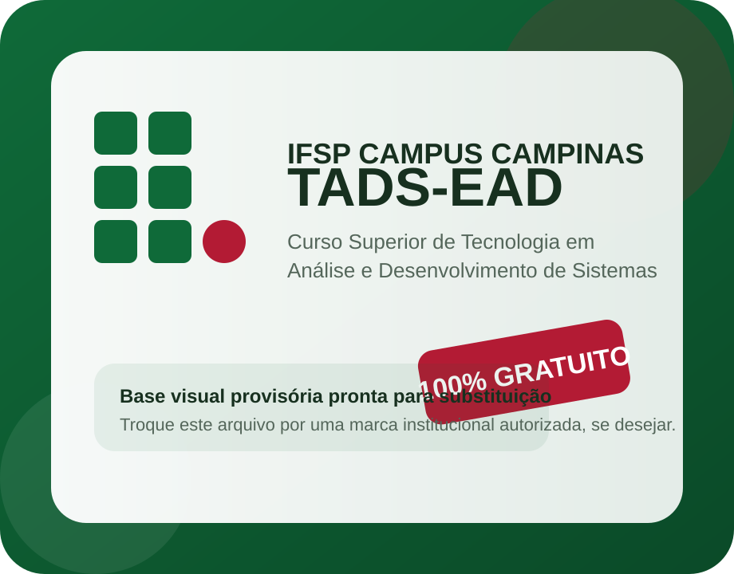

Modalidade
Curso superior de tecnologia ofertado na modalidade a distância, com mediação pedagógica e apoio institucional.
Construa uma carreira sólida em uma das áreas mais requisitadas do momento.
Formação pública, gratuita e orientada para o desenvolvimento de competências em programação, análise de sistemas, banco de dados, engenharia de software e tecnologias aplicadas ao mundo digital.

Importante: o arquivo atual é um espaço visual provisório. Se você quiser usar a marca oficial do IFSP,
basta substituir o arquivo assets/ifsp-badge.svg por uma imagem institucional autorizada com o mesmo nome.
Esta área já está pronta para receber o link do edital, cronograma, período de inscrição e orientações para matrícula.
O TADS-EAD foi estruturado para formar profissionais capazes de analisar problemas, projetar soluções, desenvolver sistemas e atuar com ferramentas contemporâneas da área de informática.
O site foi organizado para concentrar as principais informações do curso em uma navegação simples, objetiva e fácil de atualizar.
Todos os textos abaixo podem ser alterados diretamente no arquivo index.html.
Curso superior de tecnologia ofertado na modalidade a distância, com mediação pedagógica e apoio institucional.
Formar tecnólogos aptos a analisar, projetar, desenvolver, implantar e manter sistemas computacionais em diferentes contextos.
Organização acadêmica com atividades online, apoio em ambiente virtual de aprendizagem e articulação entre teoria e prática.
Informe aqui a duração oficial do curso em semestres ou anos.
Informe aqui a carga horária total do curso.
Os concluintes aprovados nos componentes curriculares receberão o diploma de Tecnólogo em Análise e Desenvolvimento de Sistemas.
Substitua por informações oficiais sobre processo seletivo, vestibular, SISU ou outra forma de ingresso.
Prof. Dr. Jackson Souza
tads.ead@ifsp.edu.br
Os links já foram inseridos e abrem em nova aba.
Esta seção foi deixada pronta para receber os nomes reais, titulação, áreas de atuação e links de currículo.
Prof. Dr. Jackson Souza
E-mail: tads.ead@ifsp.edu.br
Você pode incluir aqui uma apresentação breve da coordenação.
Titulação, área de atuação e link do Lattes.
Titulação, área de atuação e link do Lattes.
Titulação, área de atuação e link do Lattes.
Titulação, área de atuação e link do Lattes.
Curso oferecido por instituição pública federal, com foco em qualidade acadêmica e compromisso social.
Ênfase em fundamentos e práticas de desenvolvimento de sistemas, programação, banco de dados e engenharia de software.
Organização pensada para ampliar o acesso e favorecer a conciliação com trabalho, deslocamento e outras responsabilidades.
Atividades orientadas para resolução de problemas, projetos e situações reais da área de informática.
Substitua os textos abaixo pelas ementas, semestres e descrições reais do curso.
Descreva objetivos, conteúdos e carga horária.
Descreva objetivos, conteúdos e carga horária.
Descreva objetivos, conteúdos e carga horária.
Descreva objetivos, conteúdos e carga horária.
Descreva objetivos, conteúdos e carga horária.
Descreva objetivos, conteúdos e carga horária.
Descreva objetivos, conteúdos e carga horária.
Descreva objetivos, conteúdos e carga horária.
Descreva objetivos, conteúdos e carga horária.
Descreva objetivos, conteúdos e carga horária.
Descreva objetivos, conteúdos e carga horária.
Descreva objetivos, conteúdos e carga horária.
Como você pediu para manter todas as seções por enquanto, esta área já ficou pronta e depois pode ser removida sem afetar o restante do site.
Espaço para curso, vídeo, playlist ou material de nivelamento.
Inserir link depoisEspaço para tutoriais sobre Moodle, acesso institucional e organização de estudos.
Inserir link depoisOs cartões abaixo são apenas modelos de layout e podem ser apagados depois com segurança.
“Insira aqui um depoimento institucional curto sobre a experiência no curso.”
Nome do estudante ou egresso
“Insira aqui um depoimento curto sobre flexibilidade, qualidade ou trajetória profissional.”
Nome do estudante ou egresso
Área preparada para explicar o público-alvo, perfil esperado e conhecimentos recomendados.
Área preparada para explicar a dinâmica acadêmica, atividades online e eventuais encontros, se houver.
Área preparada para resumir o processo seletivo e apontar para o edital oficial.
Sim. O layout já reforça visualmente a oferta pública e gratuita do curso.
Recomendamos começar pelo PPC e pela Estrutura Curricular, disponíveis na seção de documentos.
Rua Heitor Lacerda Guedes, 1000
Cidade Satélite Íris
Campinas-SP
Prof. Dr. Jackson Souza
tads.ead@ifsp.edu.br
Coordenadoria de Registros Acadêmicos
cra.cmp@ifsp.edu.br